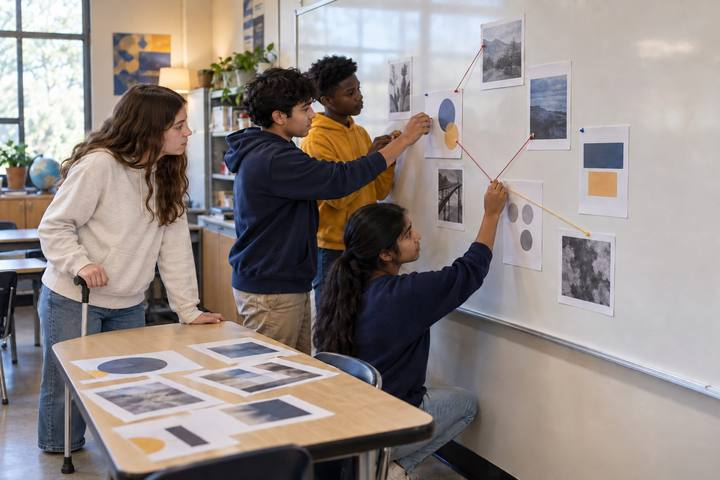
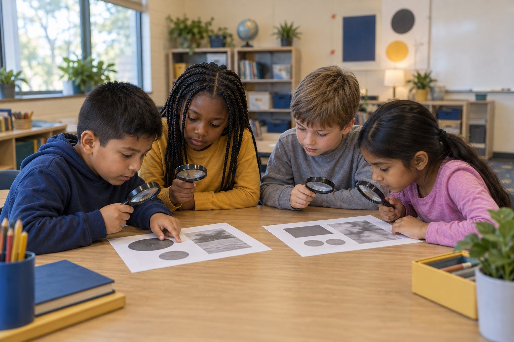

Student learningfor Grades 6–8, Grades 9–12
Signal to Headline Lab
Students turn a true present-day tech trend into a plausible future headline and lede, then trade and fact-check each other's work for accuracy and clickbait.

All activities Student learning
Students investigate described photos that were cropped, edited, or made with AI, and learn two fact-checker moves that work better than staring: Stop, and Find better coverage.
A photo can be real and still tell a false story. It can be cropped so you only see part of what happened, edited so something is added, removed, or changed, or made with AI so it shows something that never happened at all. Staring harder at a picture often doesn't help, and AI-made images keep getting harder to spot by looking. In this lesson, teams investigate ten photo cards (described in words, so no real photos are needed). They practice two moves fact-checkers use, in kid language: STOP (notice your feelings before you believe or share) and FIND BETTER COVERAGE (do other trusted sources show the same thing?). Then they crop a picture themselves to see how easily a story can change.
Hook
Make a frame with your hands and hold it up to one small part of the room, for example the one messy corner of a bookshelf. Describe only what's in your frame: "This classroom is a total mess!" Then drop your hands so students see the whole, tidy shelf. Ask: "Was what I showed you real? Was the story true?" Say: "That's called cropping: showing only part of a picture. Today you're photo detectives. You'll learn how pictures can tell a false story, and what to do about it."
Facilitator noteStudents usually say, "It was real but it wasn't fair." Hold onto that phrase; it's the heart of the lesson.
Model
Write four words on the board and give one kid-friendly example each: Cropped (only part is shown), Edited (something added, removed, or changed), AI-made (a computer made it from patterns; it never happened), and Wrong caption (a real photo with words that tell the wrong story). Then teach the two moves with gestures. STOP (hand up like a crossing guard): "How does this make me feel? Surprised, scared, angry, amazed? Big feelings are a signal to slow down." FIND BETTER COVERAGE (hand over eyes, looking far): "Do other trusted sources, like a news site a grown-up trusts, the library, or the people who were there, show the same thing?" Model Card 1 aloud: STOP ("Whoa, a giant fish! I feel amazed"), make a first guess, then walk to your table and pick up the Better Coverage slip, read it, and change your answer.
Facilitator noteName the limit honestly: "Sometimes you can spot clues, like weird hands or blurry edges in AI pictures. But clues don't always work, and AI pictures keep getting better. Checking other sources works even when your eyes can't tell."
Practice
Teams work through Cards 2–10. For each card: the Reader reads it aloud; everyone does STOP and names the feeling; the Recorder logs a first guess (Real, Cropped, Edited, AI-made, or Wrong caption) on Handout B. Then the Runner comes to your table and asks for that card's Better Coverage slip, which is their "search." The team reads it and logs the final call and whether their guess changed. Rotate roles every card.
Facilitator noteWatch for Card 7, the real and honest photo. Some teams will call it fake because they're now suspicious of everything. That's a great teaching moment: "Checking also tells us when something IS true."
Debrief
Ask teams: "Which card fooled you at first? Which move changed your mind?" Record answers on the chart under STOP or FIND BETTER COVERAGE. Then ask about Cards 4 and 9 (the AI-made ones): "Could you tell by looking? What did tell you?" (Better coverage: no one who was there saw it; the maker said it was AI.) Finally: "Card 5 was a real photo. What made it untrue?" (The caption.)
Facilitator notePush past "it looked fake." You want "no other trusted source showed it" or "the full picture showed something different."
Create
Students complete Handout C. They draw a whole scene in the big box (for example, a birthday party where one kid is crying because they dropped their cake, while everyone else is laughing at a clown). Then they draw a cropped version showing only one part, and write the false caption someone could put on it and the true caption. Pairs trade and try to guess the whole scene from the crop before flipping to see it.
Facilitator noteLook-for: students choose a crop that changes the feeling of the story. That shows they understand cropping as a choice someone makes, not an accident.
Reflect
Each student finishes the last two rows of Handout B on their own: "The move I'll use next time a picture gives me a big feeling is ___ because ___." and "One person or place I can go for better coverage is ___." Collect as evidence.
Facilitator noteGood answers name a real, reachable source: a family member, the school librarian, a news site a grown-up trusts.
The whole lesson runs on paper. The Better Coverage slips are the unplugged version of searching: asking for one is the same habit as leaving a picture to see what other trusted sources say. Students have to walk to the teacher's table to get it, which makes the move visible. The hand-frame hook and Crop It! need nothing but hands and pencils.
Project a photo you took yourself on the teacher's device and crop it two ways as students watch, writing a different caption for each. Then, if your district approves an AI image tool, project it and type a prompt for a scene that never happened in your town, such as "a moose walking through the Maple Hollow Elementary cafeteria." Ask: "If this showed up online, how would you find out it's not real?" (Better coverage: the school, local news, people who were there.) Students never use their own AI accounts. Older students can also practice finding better coverage on a teacher-chosen news site with a grown-up.
Does it need a screen? The live crop and the AI image make the lesson's claim concrete: students watch a real photo change its story in seconds, and watch a convincing picture of something that never happened appear on demand. That is evidence paper descriptions cannot give. The checking move itself works fully on paper.
What you should be able to see or collect if it worked.
Students investigate cropped, edited, and AI-made photos by checking other coverage, reading images and captions as multimodal texts with a purpose.
At home, students show a family member the hand-frame trick and explain STOP and FIND BETTER COVERAGE, then look at a picture in a newspaper, magazine, or ad together and ask, "What might be outside the frame?" In the next lesson, connect to Ad or Info?, where students ask why someone made a picture.